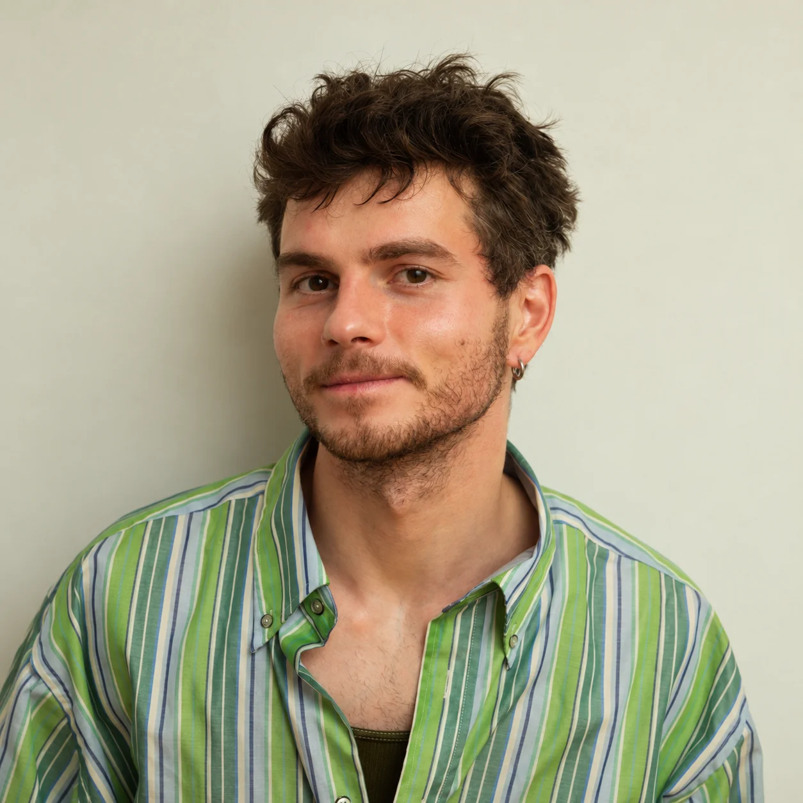
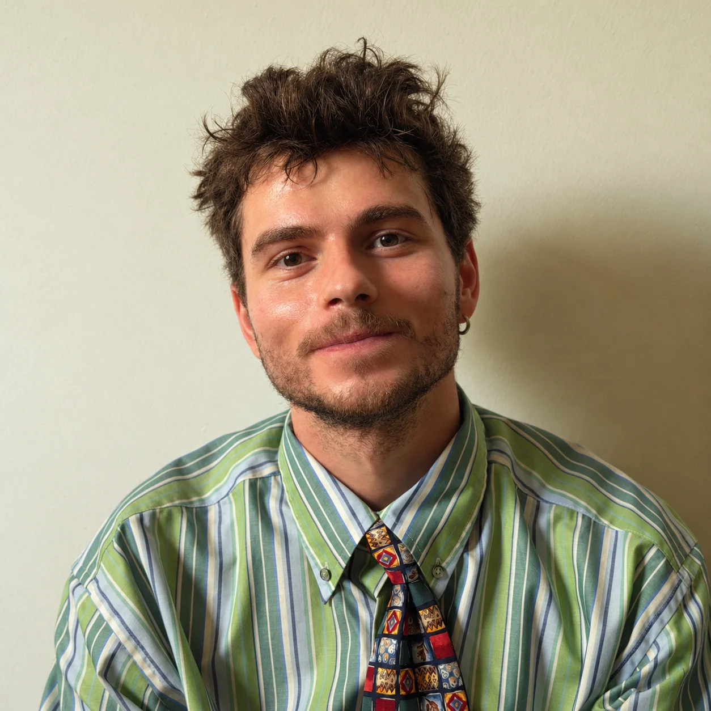

35€*
Reduced rate
If you’re going through a difficult financial period and can’t afford the standard fee, this option is for you.
I believe compassion and science make a great team in therapy, so I keep my heart open to my clients and my mind open to new and better ways to support them.

I mainly work with queer folks and expats, but if you don’t belong to either group and think we might be a good fit, don’t hesitate to reach out.
We’ll get to know each other a little, talk about what brings you here, and leave room for your questions. There’s no obligation to book further sessions.
Book a sessionI continue to develop my practice through further training, regular professional supervision, and peer consultation.
until I graduate, I offer sessions at a reduced fee
IFS is an experiential therapy. It uses our senses as a gateway to the subconscious.
Our brain processes much more than our conscious mind can access. Our body records our experiences and gives us sensory cues when we face something similar. Something just feels “right” or “scary,” and we move towards or avoid it. It’s that gut feeling, a soup of everything we’ve experienced before.
These cues are often not interconnected, which might feel quite confusing. We might want to both rest and keep working at the same time. And we might bash ourselves with criticism if we decide to lie down when the job isn’t done.
In IFS, we call these cues, sensations, and thoughts parts. That way, we can structure them and find and heal the underlying causes.
There is a lot more to say about it. You can find a more detailed explanation by clicking the button below, or I’ll be happy to explain more during our (free) intake session.
Read morenot at all
We can start with whatever is bothering you at the moment, even if you find it difficult to put into words. As we explore, we may notice feelings or connections you hadn’t been aware of.
You don’t need to arrive with everything figured out.
no prior knowledge is needed
I enjoy introducing people to IFS and will explain how it works during our introductory consultation.
You don’t need to learn any terminology or prepare beforehand. I’ll guide you as we go.
no
Queer people and expats are the main focus of my practice, but you don’t need to belong to either group to work with me.
And if you do, our sessions don’t have to focus on your identity or life abroad. We can explore whatever brings you here.
a free, 30-minute introductory consultation
We’ll get to know each other a little, talk about what brings you here, and leave room for your questions. I’ll explain how I work and, if there’s time and you’d like to, we can try a brief IFS exercise to give you a feel for the approach.
There’s no obligation to book further sessions.
We’ll discuss a rhythm that suits your needs and availability during our introductory consultation.
There’s no fixed number of sessions: how long we work together depends on what you want to explore and how the work develops.
The first few sessions give us a chance to see how the approach feels for you, and we’ll keep checking in about whether it’s helping.
You can choose an available appointment through my online booking calendar and join our session from your laptop or phone.
Find a private space where you feel comfortable and can speak without being overheard or interrupted. A reliable internet connection and clear audio are important; headphones with a microphone can help.

Write me a message, or book the free 30-minute introductory consultation straight away.
Internal Family Systems is an experiential therapy. It uses our senses as a gateway to the subconscious.
Our brain processes much more than our conscious mind can access. Our body records our experiences and gives us sensory cues when we face something similar.
Something just feels “right” or “scary,” and we move towards or avoid it. It’s that gut feeling, a soup of everything we’ve experienced before.
These cues are often not interconnected, which might feel quite confusing. We might want to both rest and keep working at the same time. And we might bash ourselves with criticism if we decide to lie down when the job isn’t done.
In IFS, we call these cues, sensations, and thoughts parts. That way, we can structure them and find and heal the underlying causes.
Everyone’s inner world looks different. These characters are just a playful way to picture a few of the voices described above. Tap one to say hello.
While it’s in making, I recommend watching the intro by Dr. Tori Olds. Or I’ll be happy to explain more during our free intake session.
I use a sliding scale to make therapy more accessible for everyone. I mention rates for a 1 hour session. You can choose the rate that best fits your financial situation. If things change, your rate can change too.
If you’re going through a difficult financial period and can’t afford the standard fee, this option is for you.
If your financial situation is relatively stable and you can afford this amount, this is the regular fee.
If you’re in a comfortable financial position, you can choose to pay a little more.
Your contribution helps me offer reduced-fee sessions to people who otherwise couldn’t afford therapy.
*I trust you to know what you can afford. No proof of income or uncomfortable questions.
If your financial situation changes, you can adjust your rate.
To make our work together easier, there are a few flexible rules.
Please cancel or reschedule at least 12 hours before your session. Otherwise, the full session fee applies.
If something important comes up, just reach out and we can cancel or reschedule without any charge.
If you’d like to book a session for today or tomorrow, please contact me first to check my availability.
Please pay for your session in advance, before it takes place.
If you can’t pay beforehand for any reason, just let me know and we’ll figure something out.
If you’re running late, please send me a quick message. We’ll still need to finish at our scheduled time, so the session may be a little shorter.
As I gain more experience and complete further training, my session fees may gradually increase.
For existing clients, any regular price increase will be announced at least 8 sessions in advance (and at least 60 days beforehand) and won’t exceed 10% within a 12-month period.
Affordability matters, so if a price change makes it difficult for you to continue, we can always discuss a rate that works for you.
You’re welcome to contact me about bookings, payments or other questions.
Just keep in mind that I may not be able to reply immediately, and I don’t provide emergency support through messages.
Writing and picture stories on queer mental health, IFS, and more.
Gut feelings, sensory cues, and why IFS gives them names. A template for written posts.
A short story told in pictures. Scroll down or swipe right, whichever feels better.
New articles and stories will appear here as they are written.
Until then, there’s InstagramHead over to my Instagram for research findings and personal reflections on queer mental health, IFS, and more.
Open InstagramInternal Family Systems is an experiential therapy. It uses our senses as a gateway to the subconscious.
Our brain processes much more than our conscious mind can access. Our body records our experiences and gives us sensory cues when we face something similar.
Something just feels “right” or “scary,” and we move towards or avoid it. It’s that gut feeling, a soup of everything we’ve experienced before.
We might want to both rest and keep working at the same time.
These cues are often not interconnected, which might feel quite confusing. And we might bash ourselves with criticism if we decide to lie down when the job isn’t done.
In IFS, we call these cues, sensations, and thoughts parts. That way, we can structure them and find and heal the underlying causes.
There is a lot more to say about it. I’ll be happy to explain more during our free intake session.